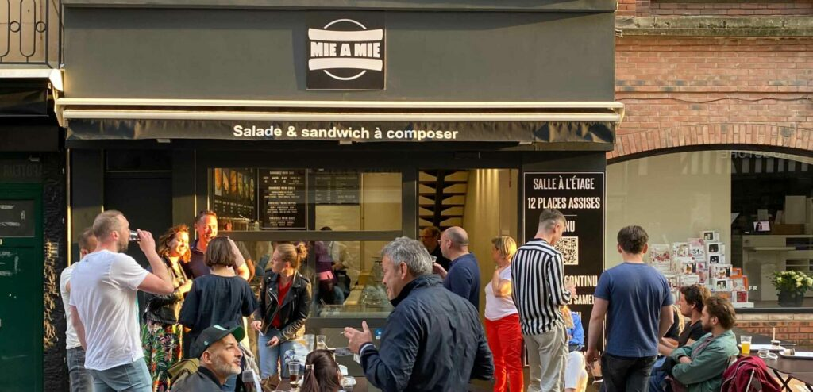

Restaurant
Coordonnees directes
Adresse: 55 rue de l'Hopital, 76000 Rouen
Telephone: 02 35 07 01 83
Horaires officiels: mardi a samedi, 11h-19h
Infos pratiques
Acces rapide vers appel, itineraire et plateformes de commande.

Restaurant
Adresse: 55 rue de l'Hopital, 76000 Rouen
Telephone: 02 35 07 01 83
Horaires officiels: mardi a samedi, 11h-19h
Commande
Commande en livraison selon votre zone.